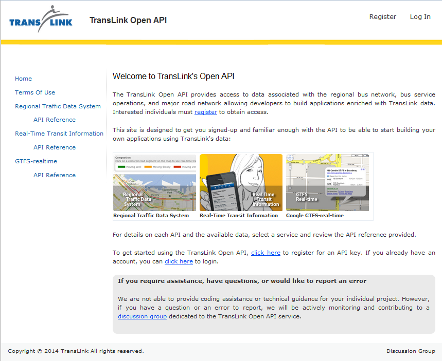

Course Name: CPSC 210 - Software Construction
Course Info: "Design, development, and analysis of robust software components. Topics such as software design, computational models, data structures, debugging, and testing" (from UBC Calendar)Project Phase 1 (individual)
- implement Java classes to represent buses, bus routes, bus stops, etcProject Phase 2 (with lab partner)
1. Access and use TansLink real-time transit data  4. Wondering how we got marked?
My awesome lab partner and I presented a live demo to one of our TAs with a Q&A time at the end. Needless to say, we aced it ;)